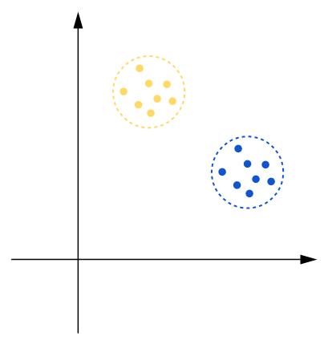

k-means聚类
问题描述
聚类应用于生活的方方面面，如人脸识别，每一个人就是一个类，将数据库中的照片与现拍的照片进行特征值的比较后划分到一个类中（即确定一个人）；又如疫情健康码，有绿码、黄码和红码三个类，根据人的居住地、最近去向、接触人群等属性将其划分到一个类中（即分配一个健康码）。
聚类问题可以描述如下：假设有$n$个无标记样本
任一样本为$d$维向量
将其按照某种相似性准则划分为若干个互不相交 的子集。
k-means聚类就是指定$k$，将其划分为$k$个互不相交的子集。
问题建模
简单的想法
k-means聚类的相似性准则为样本间的欧式距离，将离得近的样本看作一个类，离得远的看作不同类。
因此，对于一个划分
要使其最优，所有类样本到各自类中心的距离之和就应该最小。
对于类$C_i$，其类中心为
即类中心是该类所有类样本和的平均值，则该类所有类样本到类中心的距离之和为
将$k$个类累加起来，就可以得到所有类样本到各自类中心的距离之和为
那么，我们的模型就可以写出来了：
注意，我们这里目标函数写成平方是为了求解方便，若不加平方，求距离就会带开方，计算不便。
优化
上面的模型有一个明显的缺陷：只考虑了同类的聚集，却没有考虑不同类的分散。
因此我们可以添加一个目标加以优化：让不同类间的类中点距离之和最大。那么我们就可以得出以下目标函数：
模型也就变成了多目标优化模型。为了求解的简便，我们先利用倒数将第二个目标函数转为求最小值，然后采用线性加权法将多目标转为单目标，得以下目标函数：
至此，我们得到了优化后的k-means聚类模型。
相似性准则
如前所述，k-means聚类使用欧式距离作为相似性准则，这其实只适用于圆形或椭圆形聚集的数据聚类，如下图所示。

而无法对其他多样分类需求的数据进行聚类，如下图，以欧式距离作为相似性准则是无法做到下图这样的分类的。

因此，相似性准则并不是普适的，而是各有专攻。如今，人们已经提出了种类繁多的相似性准则，适用于不同的应用场景，若有兴趣，可以去查询相关资料。
本博客所有文章除特别声明外，均采用 CC BY-SA 4.0 协议 ，转载请注明出处！